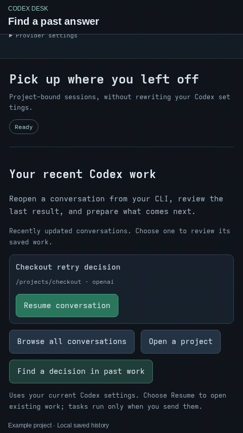

Codex Desk / Local conversation history
Find an old Codex answer.
Remember the decision, but not the conversation title? Search a phrase from your saved work. Read the original answer and tool results—even if the old project folder is gone.
Free local workbench · Existing native Codex configuration · Python 3.11+
Local Codex history on macOS Desktop? Use Desktop’s bundled Codex—no separate CLI installation.
Need terminal resume, a multi-agent archive or agent memory? Choose a saved-work workflow.

retry budget, and read the original answer. A 20-second loop.- IndexYour existing local history
- SearchA phrase you remember
- ReadThe original evidence
- ChooseContinue when ready
Find the answer, not its title.
Launch Desk with your usual Codex home and open its printed local browser URL. The installation instructions above contain the current one-command launcher and the Python alternative.
- On the first screen, choose Find a decision in past work. In an open project, use Search saved content in the sidebar.
- Choose Index existing Codex history. This explicitly reads your recent native conversations into Desk’s local cache. Watch the seen/indexed/unchanged/failed counts as the scan runs.
- In Saved content query, enter a phrase from the answer or command output—such as
retry budget—then choose Search. Keep All indexed projects when you do not remember its folder. You can submit the query while indexing: when that explicit scan finishes, an unchanged submitted query in the active search dialog refreshes once. - Check the matching conversation, folder and snippet. Choose Read original conversation to open the exact original turn and item, with the saved phrase highlighted.
Search is literal and case-insensitive, with Unicode forms normalized. It searches readable messages and tool evidence, not just conversation titles.
Edits stay unsubmitted until you choose Search. Completion preserves your reader, result focus and navigation. After closing the dialog or inspecting an existing result, choose Search when you return to update the matches.
The project folder is gone?
You can still read its saved conversation. Reading the original history does not import or resume the task, and leaves your selected project and draft unchanged. The folder is needed only when you choose to continue work there.
Read the result in context.
The reader shows the original messages and command, file or tool evidence. Expand a command to inspect its reported output and exit status. Use Previous items and Next items for other pages; Earlier text and Later text reveal longer output.
Back to search returns to the same query and results. If a read fails, Retry read tries that original conversation again.
Continue only when you want to.
Read original conversationInspect the saved answer and evidence.
Your active task stays as it is.
Continue this conversationOpen the same native thread.
Its saved project folder must exist.
To work on the original task, choose Back to search, then Continue this conversation on the matching native result. Desk resumes that thread with Current Codex settings.
Write the next instruction and wait for Draft saved locally, or choose Save as follow-up. Send it with Run task or Send next when ready. Relaunch Desk with the same state directory to recover your preparation.
If the old folder no longer exists, use the useful decision in an available project instead of continuing the missing workspace.
What gets searched, and what gets read?
Each index pass reads up to 200 recently updated conversations from the selected Codex home. Index coverage and text limits reports the local cache’s coverage. Repeating the scan refreshes this recent window and skips unchanged conversations.
A search reads the local cache. Read original conversation makes a fresh native history read for that exact thread:
{"method":"thread/read","params":{"threadId":"<saved-thread-id>","includeTurns":true}}This read is independent of the saved working directory. Native resume is a separate operation, and sending the next instruction starts a separate task turn. The reader displays 40 original items per page and up to 20,000 text characters per item window, with controls to read the remaining text.
Tell us which answer you needed.
Did you find the decision and read its original evidence? If a step blocked you, tell us your operating system, CLI version and the step reached. A short error excerpt with private details removed is enough.